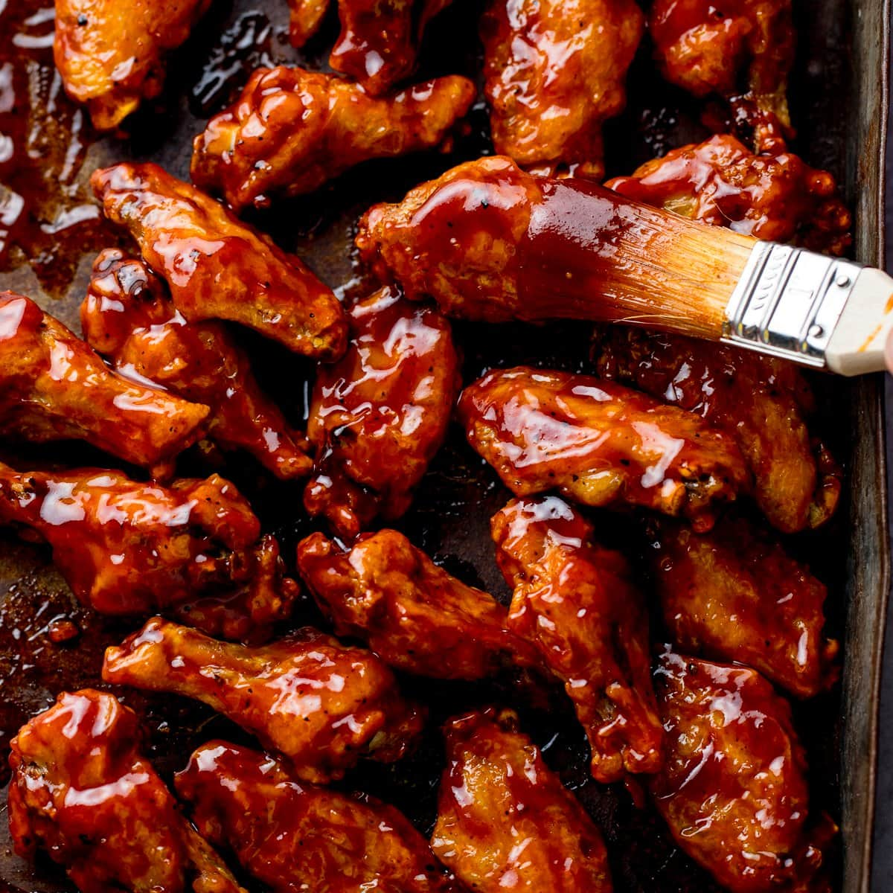

Home
BBQ Wings

Sticky BBQ wings tossed in a tangy-sweet sauce—crispy on the outside, juicy inside. Perfect for game day, parties, or a casual dinner.
- 1.5 kg chicken wings, split into drumettes and flats
- 1 tsp salt
- 1/2 tsp black pepper
- 1 tsp smoked paprika (optional)
- 2 tbsp vegetable oil
- 1 cup BBQ sauce
- 2 tbsp honey or maple syrup
- 1 tbsp soy sauce
- 1 clove garlic, minced
- Chopped parsley or green onions to garnish
- Preheat oven to 220°C (425°F). Line a baking sheet with foil and place a wire rack on top.
- Pat wings dry with paper towels. Toss wings with oil, salt, pepper and smoked paprika.
- Arrange wings on the rack in a single layer. Bake for 25–30 minutes, turning once, until skin is crisp and golden.
- While wings bake, combine BBQ sauce, honey, soy sauce and garlic in a small saucepan. Warm gently until combined and slightly thickened.
- When wings are cooked, toss them in the warmed sauce to coat, or brush sauce on the wings and return to the oven for 3–5 minutes to set the glaze.
- Transfer to a serving plate, garnish with chopped parsley or green onions, and serve hot with extra sauce on the side.